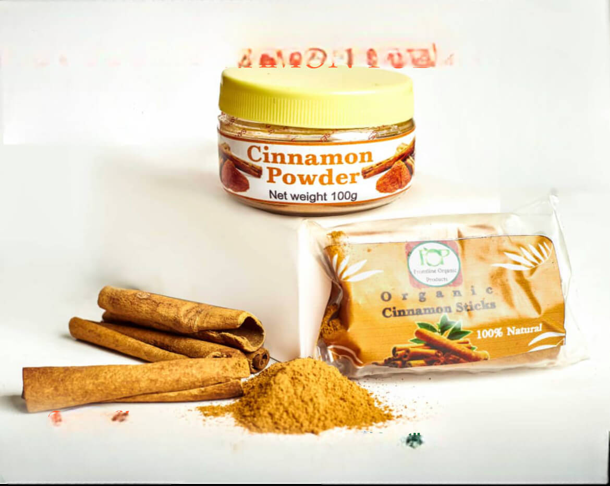
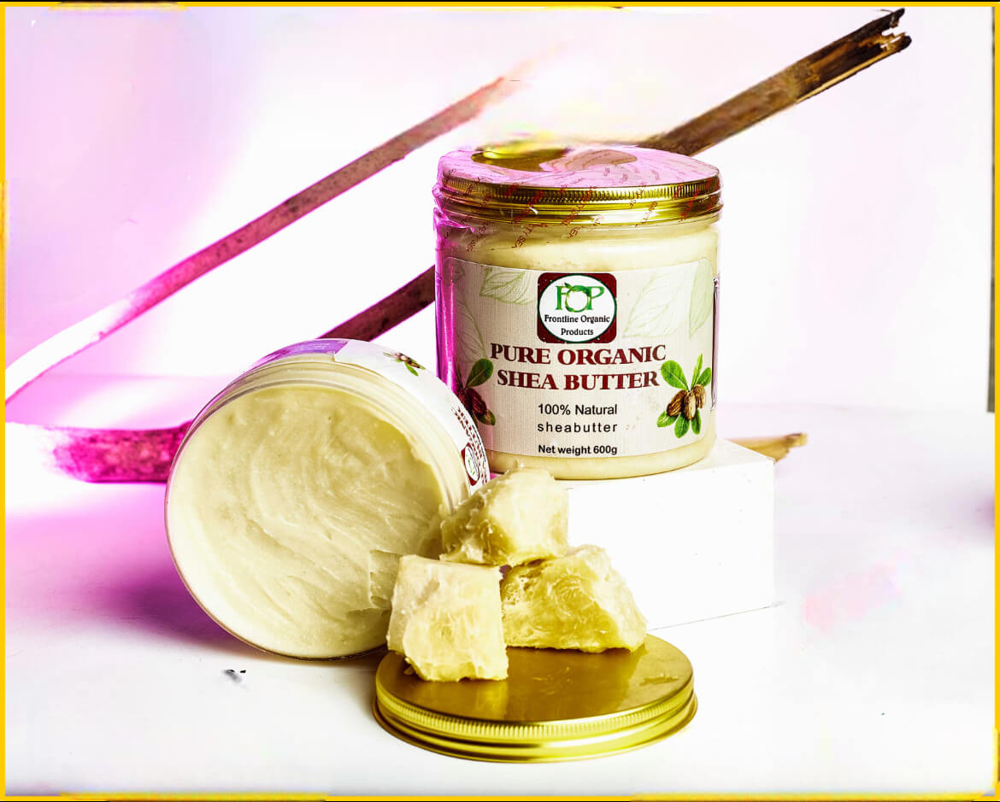
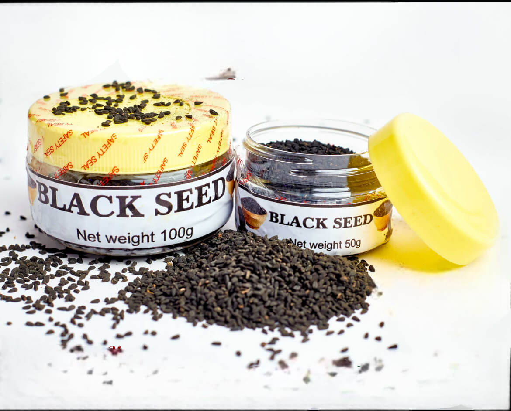
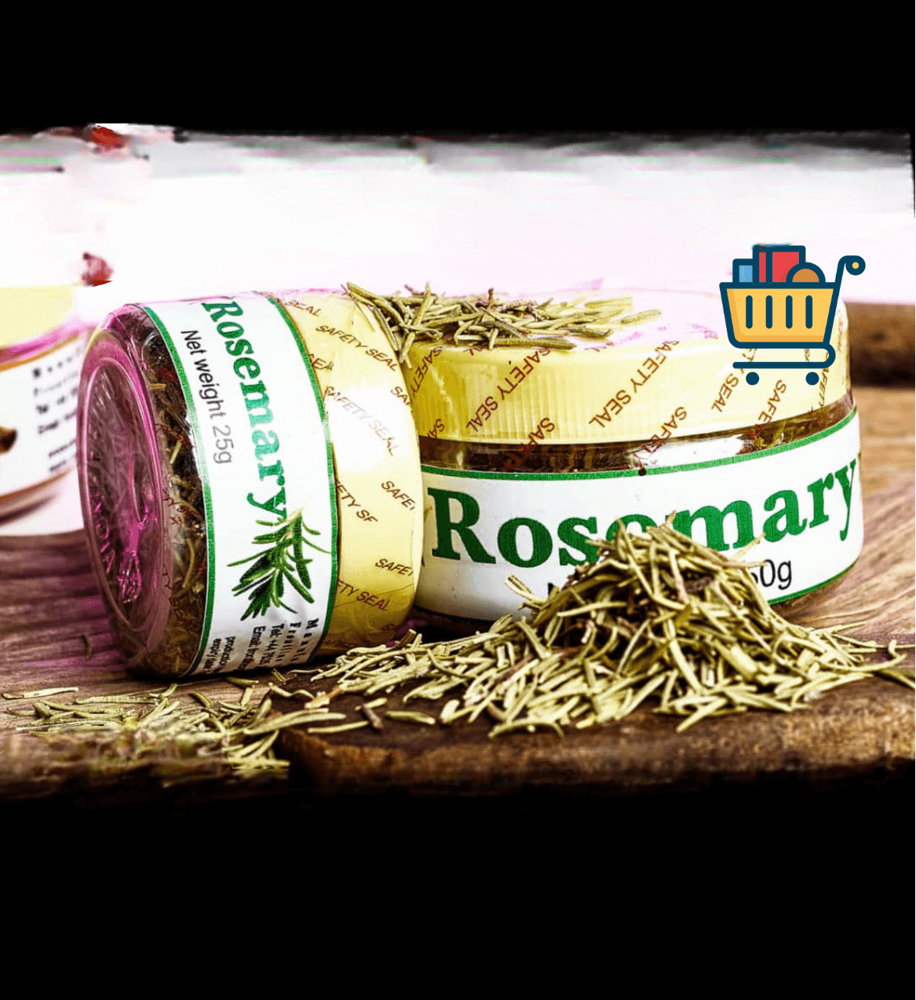
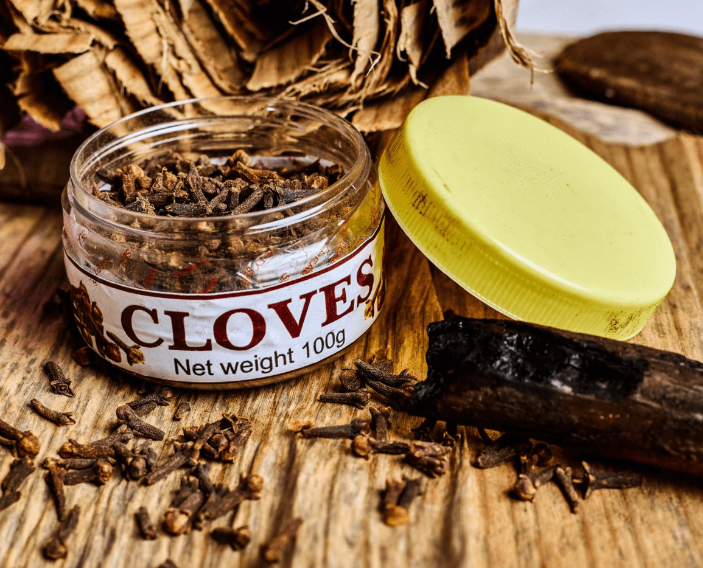
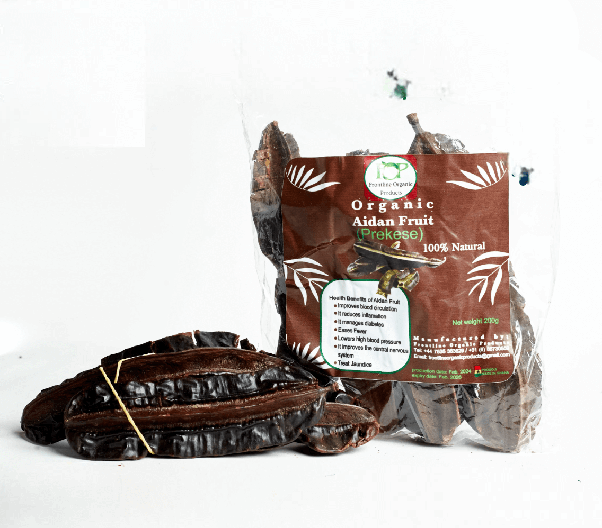
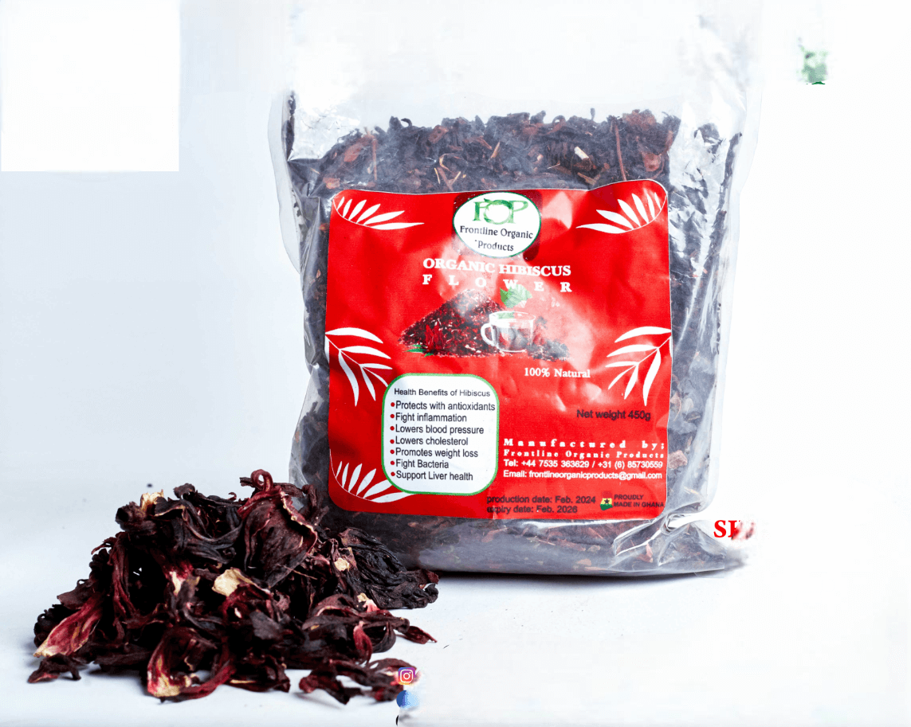
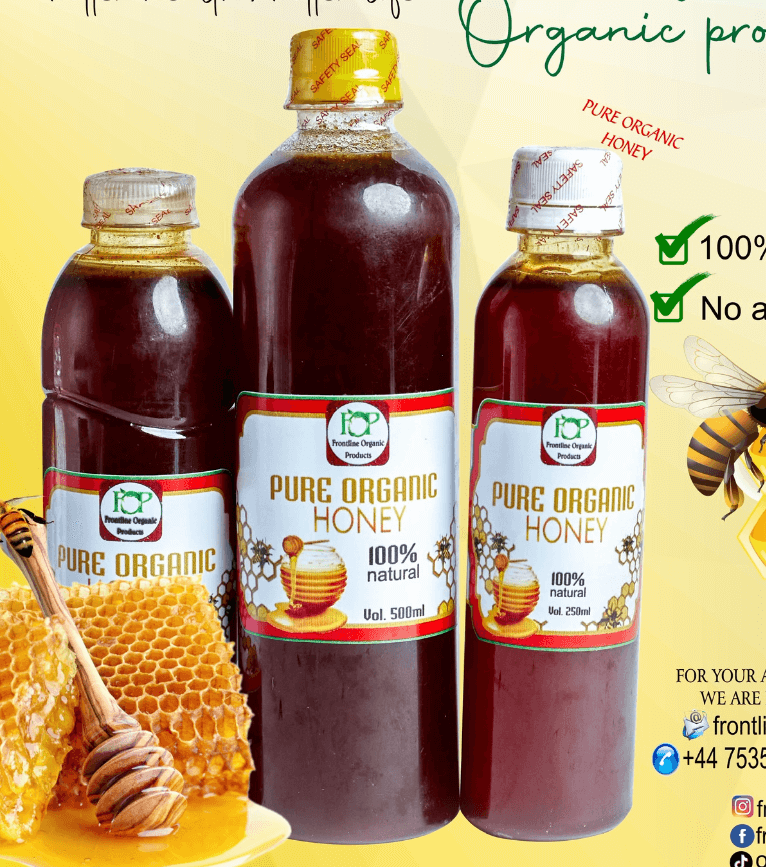
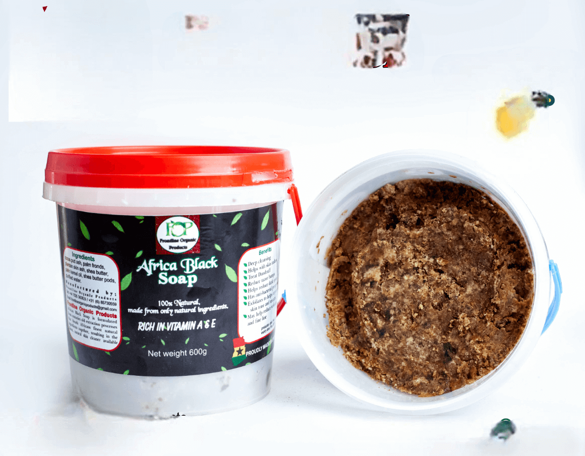

Browse Our Products below

Savour the rich aroma and sweet-spicy taste of our organic
cinnamon, a powerhouse of flavour and wellness.
Organic Cinnamon
Savour the rich aroma and sweet-spicy taste of our organic
cinnamon, a powerhouse of flavour and wellness.
This
super spice balances blood sugar, boosts metabolism, and
enhances both sweet and savoury recipes.
Sprinkle a little goodness into your meals and enjoy its natural
benefits!

Deeply moisturise and protect your skin with our raw, unrefined
shea butter, rich in vitamins A and E.
Organic Shea Butter
Deeply moisturise and protect your skin with our raw, unrefined
shea butter, rich in vitamins A and E.
This
luxurious, all-natural butter soothes dryness, reduces scars,
and enhances skin elasticity.
Experience the
ultimate nourishment for soft, glowing skin every day!

Boost your health with the powerful benefits of black seed,
known as the "seed of blessing."
Organic Black Seed
Boost your health with the powerful benefits of black seed,
known as the "seed of blessing."
Rich in
antioxidants, it supports immune function, digestion, and skin
health.
Whether in teas, oils, or smoothies, this
ancient remedy is a must-have for total well-being!

Experience the fresh, earthy aroma of organic rosemary, perfect
for cooking, hair care, and relaxation.
Organic Rosemary
Experience the fresh, earthy aroma of organic rosemary, perfect
for cooking, hair care, and relaxation.
Packed with
antioxidants and anti-inflammatory properties, it enhances
flavour in dishes while promoting scalp health.
Add
a touch of nature’s magic to your kitchen and beauty routine!

Add a warm, spicy kick to your dishes with our premium organic
cloves, packed with essential oils and health benefits.
Organic Cloves
Add a warm, spicy kick to your dishes with our premium organic
cloves, packed with essential oils and health benefits.
Known for their antibacterial properties, cloves aid digestion,
freshen breath, and enhance immune support.
Perfect for seasoning, teas, or even natural remedies!

Unlock the natural healing power of Aidan Fruit (Prekese),
packed with antioxidants and essential nutrients.
Organic Aidan Fruit (Prekese)
Unlock the natural healing power of Aidan Fruit (Prekese),
packed with antioxidants and essential nutrients.
Traditionally used in herbal remedies, this aromatic
fruit enhances soups, stews, and teas while promoting overall
wellness.
Add it to your daily routine for a natural immune boost and
vibrant health!

Brew a refreshing, tangy cup of hibiscus tea, rich in vitamin C
and bursting with flavour.
Organic Hibiscus Flower
Brew a refreshing, tangy cup of hibiscus tea, rich in vitamin C
and bursting with flavour.
This vibrant flower
supports heart health, aids digestion, and provides a natural
energy boost.
Enjoy it hot or cold for a delicious, antioxidant-rich treat!

Indulge in the pure, golden goodness of our 100% organic honey,
harvested from the finest bees.
Organic Pure Honey
Indulge in the pure, golden goodness of our 100% organic honey,
harvested from the finest bees.
Naturally rich in
enzymes and antioxidants, it’s perfect for sweetening tea,
drizzling over breakfast, or nourishing your skin.
Enjoy nature’s sweetest superfood, free from
additives and preservatives!

Reveal radiant, blemish-free skin with our handcrafted African
black soap, made from natural plant-based ingredients.